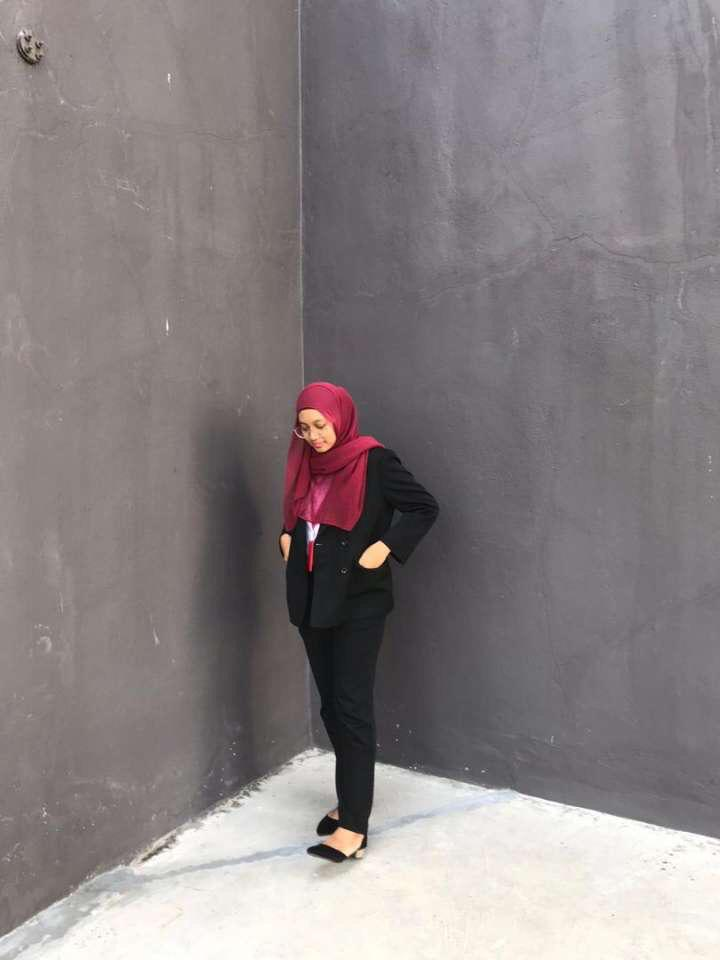
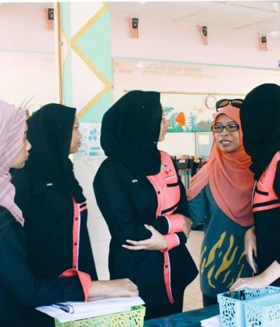
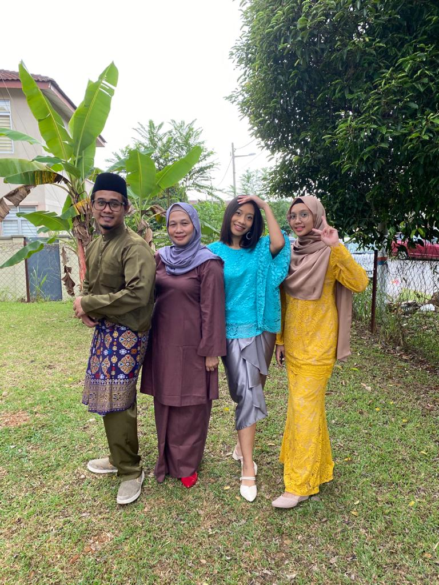

My name is Alya Irdina Binti Khalid Al-Walid and you can call me Alya. I was born on 18th August 2000 and currently residing in Seri Kembangan, Selangor. Although, my birthplace is at Seri Gombak, Selangor! I have a burmese cat named Teddy Bear and he is the cutest cat ever in the whole wide world! Scroll down to see him dominating the world with his own doe eyes. Anyway, see you at the next section haha.

Education Background
My early education started in 2005. I was 5 years old, attending Tadika Hillview in Taman Melawati for year before I moved to Seri Gombak. Naturally, I transferred to another preliminary school which was Tadika Kemas. Afterwards, I advanced to primary school; known as Sekolah Kebangsaan Taman Seri Gombak 2. If you're wondering why 2? Well, both SKTSG1 and SKTSG2 are built next to each other and apparently, the SKTSG1 is more popular hence any additional application were transferred to SKTSG2. Anywho, after graduating primary school with 3As in my hand, my family decided to move to Seri Kembangan, Selangor. I started my secondary school at SMK Seksyen 3 Bandar Kinrara for 2 years, but since the school is too far from my house (took like an hour drive to reach the school!), I moved to another school; known as SMK Taman Desaminium. I took my SPM there, and alhamdulillah I was able to get 2As.
Currently, I am studying for a Diploma in Information Management at UiTM Kampus Rembau, Negeri Sembilan. I started on January of 2019, and now I am in my last semester in 2021! How time flies so fast, let me wipe these tears real quick.

Experience
During my second semester in UiTM, I was quite.. inactive from joining any events and such. However, when Official Language Club started to recruit for members, I shrugged and said 'Why not?' haha. After the interview, I was accepted in the club and was given the role of English EXCO. Several weeks passed by and eventually our club was given the green light for CSR events. My team, the English EXCOs, was tasked to plan an event at SK Bongek, Rembau. We decided to do GLAD Camp where we taught rural students basic English grammar. It was a fun experience, the kids were bouncy and cheerful and I am quite pleased that some of them still remember me to this day! Overall, handling an event is a long process and should always be monitored constantly! I hope I can join more CSR events in the future!

Family
It's family time!
Alright you peepers. I'll have you know that I have 5 siblings, including myself :) I have 3 older brothers and a big sister. Yes, I'm the youngest and the only one studying! Everyone has stable jobs; and that equals to stable finance.. you know what that equals to? Yes, me leeching off of them heh. If FoodPanda has a list of loyal customer, you bet I would be in there since I always ask my generous siblings for food and desserts. At the moment, I live with my mother, brother, and sister. My other two brothers' and father's homes are located at Seri Gombak! As you can see in the picture, this (small) family photo was taken during Raya 2020, the infamous period of MCO 1.0.


{kind=link}
{kind=link}
{kind=link}